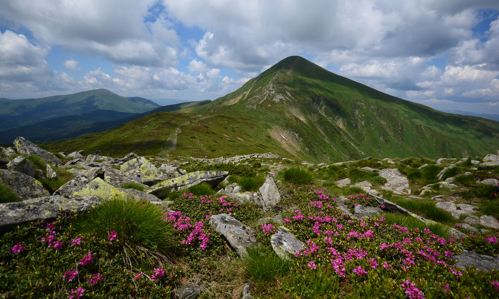

Карпати
Карпати — гірська система, розташована у східній частині Центральної Європи, на території України, Угорщини, Чехії, Польщі, Словаччини, Румунії, Сербії та Австрії. Простягаються від околиць Братислави до Залізних Воріт на 1500 км, утворюючи опуклу дугу, що замикає собою Середньодунайську рівнину. Українські Карпати — частина гірської системи Східних Карпат (які поділяються на Зовнішні Східні Карпати та Внутрішні Східні Карпати) на Заході України. Їхня довжина від верхів'їв річки Сян до витоків річки Сучава становить 280 км, а ширина — понад 110 км. Пролягають територією Закарпатської, Львівської, Івано-Франківської та Чернівецької областей. Площа гірських масивів Українських Карпат становить понад 24 тис. км². Гірські хребти, розділені поздовжніми улоговинами та розмежовані глибокими поперечними долинами, простягаються, переважно, з північного заходу на південний схід.

Гора Говерла
Гове́рла найвища вершина Українських Карпат і найвища точка України, її висота становить 2061м над рівнемморя.Розташована вгірському масиві Чорногора намежі Надвірнянського району Івано-Франківської області та Рахівського району Закарпатської області, за 17 кілометрів від кордону з Румунією.
Гора Петрос
Висота — 2020 м. Розташована у північно-західній частині масиву між горами Шешул (на південному заході) і Говерла (на сході). Західний і південно-західний схили круті з численними кам'яними розсипищами, північний та північно-східний — урвисті, зі скельними виступами. Є давньольодовикові форми рельєфу. Складається з пісковиків. Вкрита переважно субальпійською рослинністю. Поширені чагарники (ялівець сибірський, рододендрон), чорничні зарості і ялинові ліси (до висоти 1530—1600 м). Взимку досить часто бувають снігові лавини. Є туристський притулок на південних схилах нижче полонини Рогнески.